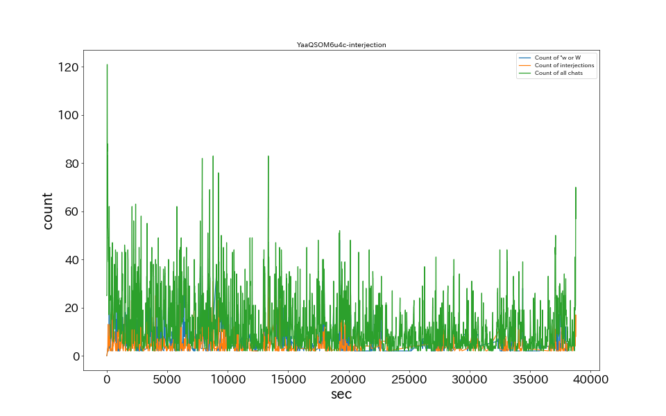

15秒あたりのコメント数
草、wのチャット数ランキング
| No. | 時間 | 草、wチャット数 |
|---|---|---|
| 1 | 05:20:15 | 48 |
| 2 | 00:02:45 | 39 |
| 3 | 02:08:15 | 37 |
| 4 | 05:19:45 | 37 |
| 5 | 00:06:15 | 35 |
| 6 | 00:13:45 | 34 |
| 7 | 02:30:30 | 34 |
| 8 | 01:46:00 | 33 |
| 9 | 02:19:00 | 33 |
| 10 | 04:57:30 | 33 |
感動詞のチャット数ランキング
| No. | 時間 | 感動詞チャット数 |
|---|---|---|
| 1 | 03:42:00 | 35 |
| 2 | 02:26:00 | 31 |
| 3 | 00:38:15 | 30 |
| 4 | 01:49:00 | 28 |
| 5 | 01:41:15 | 27 |
| 6 | 01:06:45 | 25 |
| 7 | 03:52:15 | 25 |
| 8 | 05:35:00 | 25 |
| 9 | 02:11:00 | 24 |
| 10 | 03:42:45 | 24 |
チャット内単語出現ランキングTop20
| No. | 原型 | チャット数 |
|---|---|---|
| 1 | 草 | 4612 |
| 2 | 1193 | |
| 3 | ナイスゥ！ | 862 |
| 4 | gg | 634 |
| 5 | ナイスゥ | 533 |
| 6 | nf | 281 |
| 7 | おかえり | 182 |
| 8 | うま | 177 |
| 9 | ナイファイ | 148 |
| 10 | あら | 132 |
| 11 | あ | 132 |
| 12 | ！？ | 129 |
| 13 | ナイスゥ！！ | 121 |
| 14 | ナイス | 105 |
| 15 | あっ | 90 |
| 16 | ないすぅ！ | 83 |
| 17 | うっま | 71 |
| 18 | ナイス！ | 69 |
| 19 | ないすぅ | 69 |
| 20 | ないふぁい | 62 |